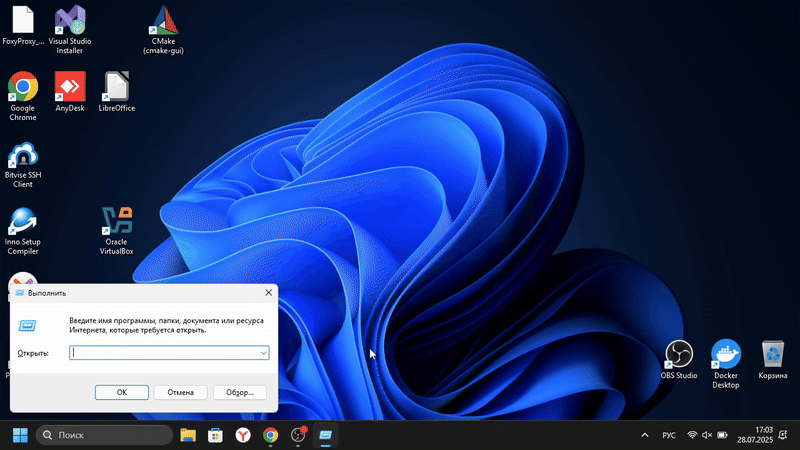

Password Checker
Это программа для перебора паролей к учётной записи Windows
(Не подходит для Linux)
Python
C++
Как отключить ограничитель попыток на аутентификацию пользователя в Windows

ТРЕБОВАНИЯ
ОС: Windows 7 x32/x64 и выше
ОЗУ: Чем больше, тем лучше
Version 0.6.5